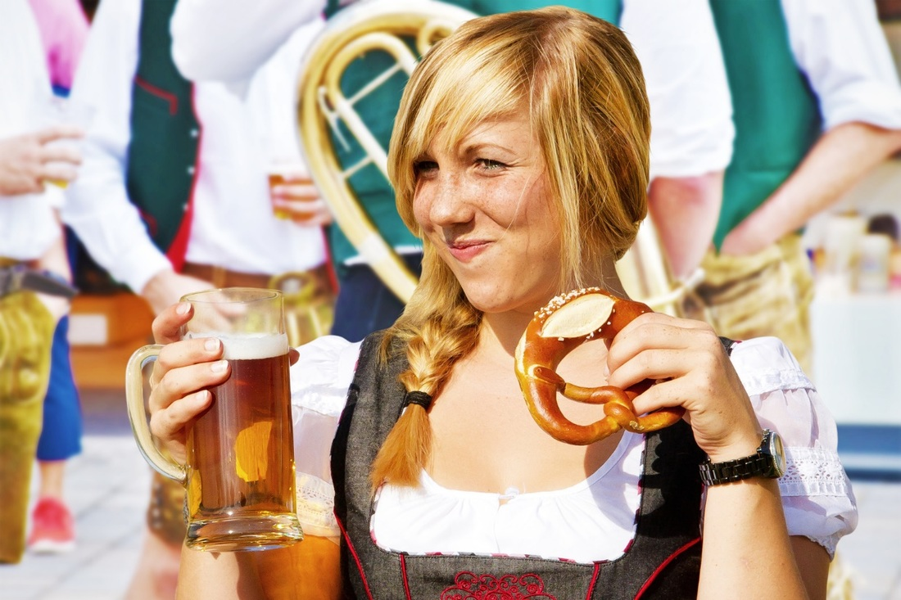
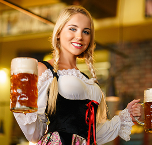
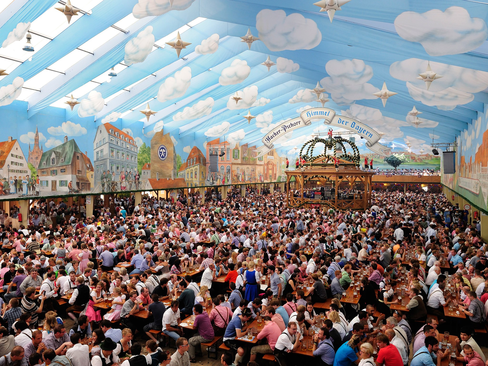
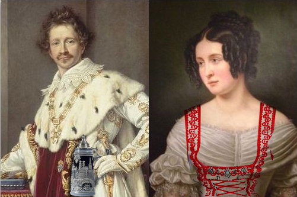
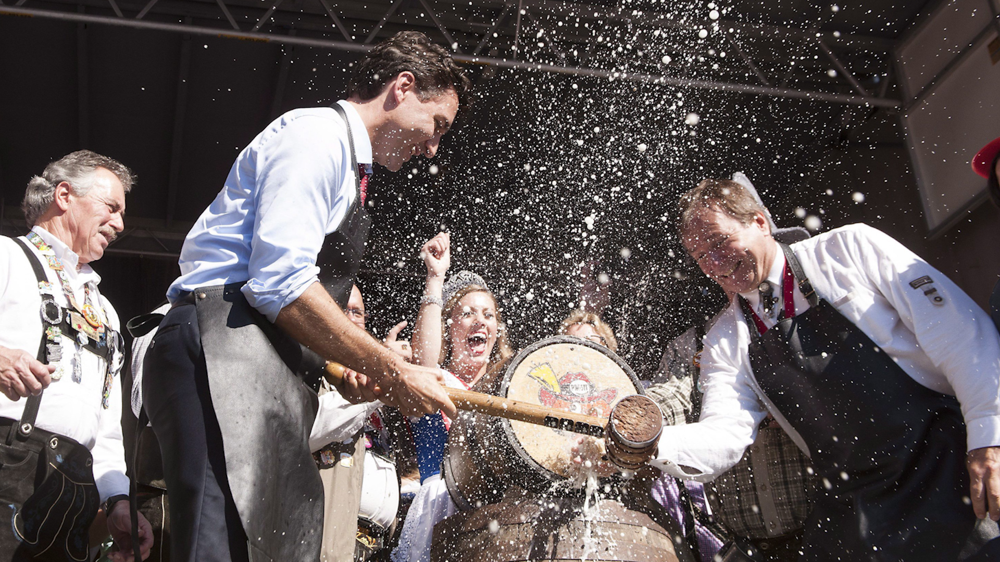

ABOUT
From the team that brought you The Commons Street Feast, Kicks Entertainment, is bringing a huge stein of Bavarian tradition to Canberra like it’s never been done before!
Oktoberfest In The Park will transform Patrick White Parklands into a celebration of the world’s largest beer and food festival, with Craft Beer Halls, Bavarian food truck village, Oompah bands, DJs, traditional dancers, side show alley and a whole host of other entertainment to blow dein mind.
Think Kranski, Pork knuckles, Pretzels, Crepes and steins of beer (plus German wines & other drinks of course), all while singing a German Oompahpah in a huge Beer Hall!
So don your lederhosen or dirndl & kommt spaß machen!

DIE DEETS
Tickets: Available through Moshtix from midday, 10 August
Venue: Patrick White Parklands, Canberra
Date: Saturday, 14 October 2017
Times: 12pm – 10pm


- 

THE KULTUR OF
OKTOBERFEST

Oktoberfest, or as the Germans also like to call it – Wiesn, after the festival ground Theresienwiese - is the world’s largest folk festival, held in Munich, Germany. Oktoberfest is an important part of Bavarian culture, having been held since the Middle Ages, and is now attended annually by more than 6 Million people.
Oktoberfest didn’t begin as a celebration of food and wine however, the very first was actually a Royal Wedding between King Ludwig I and Princess Therese of Saxe-Hildburghausen.

Taking place on 12 October, 1810, the citizens of Munich were invited to attend the festivities held on the fields in front of the city gates to celebrate the royal event. With some 40,000 people attending and having such an amazing time, the decision to repeat the spectacle and celebrations in 1811 launched what is now the annual Oktoberfest tradition.
The most honoured tradition of Oktoberfest is the Tapping of the Keg. No beer is consumed at the festival until the mayor officially opens the first keg to signify the opening of the festival and this is known as Anzapfen. And that’s when the fun starts!

The Bavarian Purity Requirements
Oktoberfest beer is not just any beer. Since the 16th century there have been strong regulations about brewing Bavarian beer and how to keep up the high quality of the final product. One of the oldest laws are the Bavarian Purity Requirements, decreed by Duke William IV. in 1516: only water, hops and barley should be used to brew Bavarian beer.
TICKET FAQ
HOW TO ACCESS PRE-SALE TICKETS?
Limited Pre-sale tickets will only be available to oktoberfestinthepark.com.au subscribers and only available from midday 7 August until allocation exhausted.
DOES +BF MEAN I CAN BRING MY BEST FRIEND FOR FREE?
Leider nein. The ‘bf’ after the ticket price means ‘plus booking fee’, not ‘plus best friend’.
WHAT’S INCLUDED IN MY TICKET?
Your ticket gives you entry to the event, and a free souvenir stein (liter Oktoberfest beer glass.)
DOES MY NAME HAVE TO BE ON THE TICKET?
Yes. Tickets can only be used by the person whose name appears on the ticket. If the name on the ticket doesn’t match the attendees photo ID then they will be denied entry. To re-issue (change the name on the ticket) the original purchaser must contact Moshtix to change the name.
I AM UNDER 18 YEARS OF AGE, CAN I COME TO OKTOBERFEST?
Nein, Oktoberfest in the Park is a strictly 18+ event. All ticket holders will be asked to provide valid proof of ID to gain entry on the day (current Australian driver’s license, passport or Australian government issued proof of age card)
I AM OVER 18 BUT DON’T HAVE A PHOTO ID, BUT I TOTALLY LOOK OVER 21. WILL I BE ALLOWED IN?
Nein. As Oktoberfest in the Park is a strictly 18+ event, each ticket holder will have their ID checked upon arrival. You need to hold a valid photo ID for entry or you will be denied.
DO I HAVE TO PRINT MY TICKET OR CAN I BRING IT ON MY PHONE?
Both methods will work at Oktoberfest in the Park (so long as your screen isn’t cracked into oblivion).
MORE QUESTIONS?
Check in with our Freunden from Moshtix | Terms & Conditions of Entry